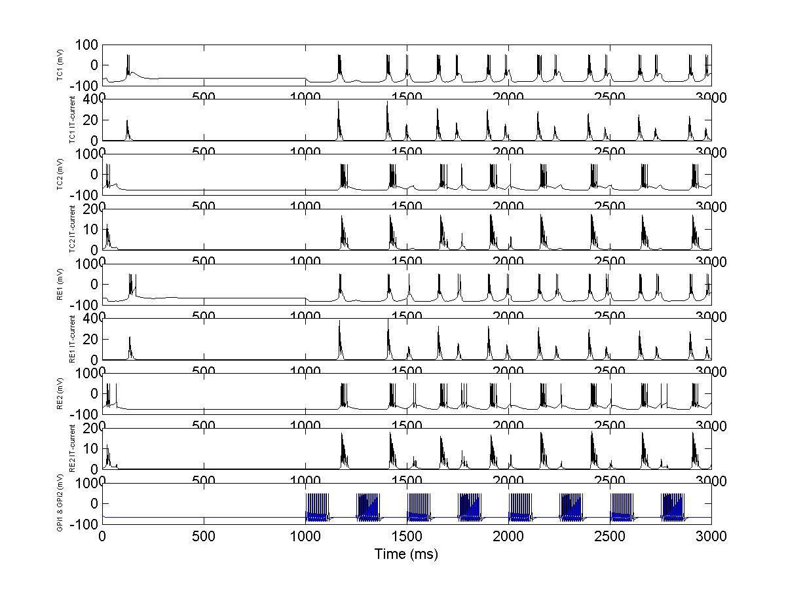

This is the readme for the model associated with
Hadipour-Niktarash A (2006) A computational model of how an
interaction between the thalamocortical and thalamic reticular neurons
transforms the low-frequency oscillations of the globus pallidus. J
Comput Neurosci 20:299-320
This model was supplied by the author.
Usage: Download and extract the archive. Start matlab and cd to the
folder created during the expansion of the archive. Add that folder
to the path (use addpath('c:\the actual path')). Start the simulation
by typing TCRE and enter. After a few minutes a figure similar to
Fig 1a2 of the paper appears:
